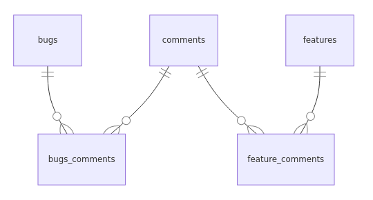
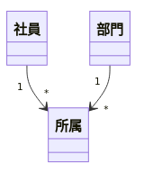

DB Design
概要
データベース(DB)の設計に関してまとめる。 DBはシステムの核となるもので、DBが先にあって周辺プログラムが存在する。 データで失敗するとプログラムで挽回することは難しいため、非常に重要である。
論理設計のあとで各製品レベル(MySQL, PostgreSQL)での実装設計がある。
Memo
SQLアンチパターン - 開発者を待ち受ける25の落とし穴 (拡大版)
- アンチパターン
- 継承・ポリモーフィックに注意する。commentsテーブルにtype(bug, feature)フィールドがあって、分岐させてるような場合
- 1つのテーブルに複数の事実が混ざっていてわかりづらい。アプリやクエリ側で吸収する必要がある
- 関連を単純化する
- comments -< bugsComments >- bugs
- comments -< featureComments >- features
erDiagram
comments{}
bugs_comments{}
feature_comments{}
bugs{}
features
comments ||--o{ bugs_comments: ""
bugs ||--o{ bugs_comments: ""
features ||--o{ feature_comments: ""
comments ||--o{ feature_comments: ""

DBの寿命はアプリより長い！長生きするDBに必要な設計とリファクタリングを実践から学ぶ
- 年齢は事実ではない。毎年カウントアップされ、変化するので情報。生年月日は変化しないのでデータ。データベースに保存するべきはデータ、事実
イミュータブルデータモデルの極意
- Event(コト)
- 日時属性をもつ
- 非対称性
- ある一時点
- 一時点の事実の記録なので、属性は変わることはない
- Resource(モノ)
- 日時属性をもたない
- 対称性
- ライフサイクルがある
- ライフサイクルにともない属性が変化していくこともある。属性が変化しても同じモノであることを示すためIdentityが必要
- 部門 -< 所属 >- 社員: 「所属」の関連を作るのに、「配属」イベントが存在しそれを記録する。リソースの関連とそれに関するイベントとは別で識別する
classDiagram class 社員 class 部門 class 所属 社員 "1" --> "*" 所属 部門 "1" --> "*" 所属

- どのイベントを記録して残すか。これが業務設計・システム設計。リソースの発生・変更・消滅するところにはイベントがある。つまり変更履歴がある
- 非依存のリソース同士が関連付け/解消されるところにはイベントがある。予約・注文・配属・割当。これらの操作履歴
- 全部が必要ではない。コストがかかるので取捨選択する
- 金になるもの
- 記録がないと金を失うリスクがあるもの
- 記録すると決めたイベントは、Factが失われるので決して変更されてはならない
イミュータブルデータモデル(入門編)
- モデルの複雑性を生むのは、UPDATEに関する要件
- モデルに対するデータの更新を極限まで削ることで、拡張に対して開いていて、修正に対して閉じている堅牢なものにする
- ミュータブルな箇所を特定し、そのUPDATEを許可する
- 更新日時という属性を徹底的に排除する
- リソースとイベントを分ける基準は属性に日時をもつかどうか
- イベントエンティティは1つの日時属性しか持たないようにする
- イベント系エンティティは更新が入らないデータが格納されるもの
- 会員を管理するシステムの場合 会員 -< 会員変更 とし、変更日時フィールドは会員変更テーブルが持つ
- 非依存リレーションシップを表現できているか。互いに独立に存在しえて、何らかのイベントによって、それらに関連性が作られるという、このイベントが何か洗い出せているか(例: 配属・購読)
イミュータブルデータモデル(世代編)
- 世代の設計方法
- イベントは更新不可
- 過日のイベントと未来の予定イベントは区別して扱う
- 過去の価格は変更できない。未来の価格は変更でき、変更予定を取り消すことができる
- 値付け実績、予定価格を分ける
- 期間によって変わる属性を別のテーブルにする。変更したときはUPDATEではなく追加になる
- UPDATEを避ける
楽々ERDレッスン (CodeZine BOOKS) | (株)スターロジック 羽生 章洋 |本 | 通販 | Amazon
所属はイベント
社員が組織に所属していることから直感的に、組織 -< 社員 としたくなるが、これは誤り。組織がなくなっても社員が消えることはない。所属はイベントとして扱い、組織 -< 所属 >- 社員 とするのが正しい。組織と社員は互いに独立したエンティティ。
DB設計の手順
- 大まかにブロック分けを行う(業務単位か部門単位)
- それぞれのブロックごとにイベント系を洗い出す
- タイムスタンプを打てるのがイベント系
- 入力系業務と出力系業務に着目する
- イベント系に対する正規化を行って、リソース系を洗い出す
- 論理的なデータ構造を押さえることに注力する
- リソース系に対する分類の洗い出しを行って、リソース系の正規化を行う
- ブロック間でリソースの統合を行い、さらに正規化を行う
- 導出系の整理をして、最終的な正規化を行う
実績系・計画系・分析系の違い
- 基幹系
- 実績データを取り扱う
- 計画系
- 版が存在する
- 分析系
- 版が存在する
データライフサイクル
- データにはライフサイクルがある。CRUD。
- データ構造とトランザクションの間に、CRUDを通じてマトリックスが書ける。各処理で、どのライフサイクルの処理を行うのか
- トランザクションを正規化しなければ、無駄なプロセスが発生する
- トランザクションの多くはUIを必要とする。UIと利用する立場によってマトリックスが書ける。そうしてユーザの役割を正規化する
- RDBMSのテーブル設計だけが設計ではない
- データはプロセスよりも永続性が高い。プロセスのありかたは変わっていくが、何をいくついくらで売ったというデータの構造は基本的に変わらないはずであるから
- インデックスは並び替え。並び替えるのにコストがかかるが探すのが早くなる。検索と更新のトレードオフ
| users | products | sells | |
|---|---|---|---|
| 顧客一覧 | R | ||
| 顧客詳細 | R | ||
| 顧客登録 | C | ||
| 顧客更新 | U | ||
| 顧客削除 | D | ||
| 商品一覧 | R | ||
| 商品詳細 | R | ||
| 商品登録 | C | ||
| 商品更新 | U | ||
| 商品削除 | D | ||
| 購入 | R | R | C |
Reference
業務システムにおけるロールベースアクセス制御 - Qiita
redmineのER図の例。
アプリケーションにおける権限設計の課題 - kenfdev’s blog
権限設定の詳しい文章。